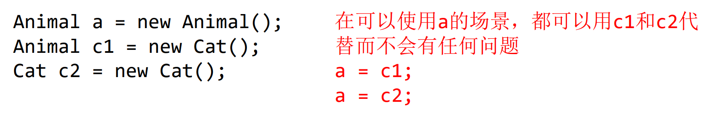
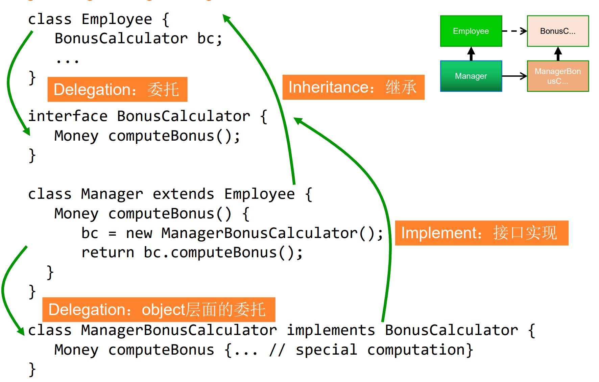

# 面向复用的软件构造技术
# 复用
接口 <- 抽象类 <- 一般类
- 面向复用编程：开发可复用软件
- 基于复用编程：利用可复用软件搭建应用
两种复用的开发成本高，性能不佳
# 衡量可复用性
复用的机会和代价
# 复用模块的层次和形态学模式
# 种类
- 白盒复用：源码可见，直接复制已有代码进行修改定制
- 黑河服用：只能用 API 调用
# 源码层级服用
直接复制已有代码进行修改定制
# 模块层级复用：类/接口
- 继承
- 委托
# 库层级复用：API/包/库
- 库：开发者调用库的代码
- Framework：Framework调用开发者的代码
# 系统级复用：Framework框架
- 白盒框架：代码层面的继承
- 黑河框架：实现特定的接口/委托
# 设计可复用的类
# 行为子类型
子类型多态：客户端可用统一的方式处理不同类型的对象

# 里氏替换原则 LSP
如果对每一个类型为 S 的对象 o1，都有类型为 T 的对象 o2 ，使得以 T 定义的所有程序 P，在所有的对象 o1 都代换成 o2 时，程序 P 的行为没有发生变化，那么类型 T 是类型 S 的子类型。
师傅别念了
- 子类需要实现父类的所有抽象方法
- 子类可以增加方法，但不可以删
- 子类重写方法时，必须用童谣类型的参数
- 子类重写方法时，不能抛出额外的异常
- 子类的 spec 不变或要求更强（更强的不变量，更弱的前置条件，更强的后置条件）
- 子类型方法参数：逆变
- 逆变 Contra-variance：指类型变弱（如 String 变成 Object）
- Java 中不允许参数逆变，遇到这种情况会当作 overload 重载处理
- 子类型方法返回值：协变
- 协变 Co-variance：指类型变强（如 Object 变成 String）
- 异常类型：协变
# 类型擦除
类型擦除：编译代码之后，编译器丢弃参数的类型信息，因此类型信息在运行时不可用
因此，泛型不是协变的
List<String> 不是 List<Object> 的子类型
所以，下边代码会报错
List<Integer> myInts = new ArrayList<Integer>();
List<Number> myNums = myInts; // 报错
1
2
2
# 泛型通配符
List<?>
1
<> super A：下限通配符<> extends A：上限通配符
子类型：
List<Number>是List<?>的子类型List<Number>是List<? extends Object>的子类型List<Object>是List<? super String>的子类型
# 委托
一个对象请求另一个对象的功能
- 显性委托
- 隐性委托
使用情况：子类只用父类的一小部分方法，可以用委托而不是继承
# 复合重用原则 CRP
通过组合来实现多态和复用
例子1：

例子2：